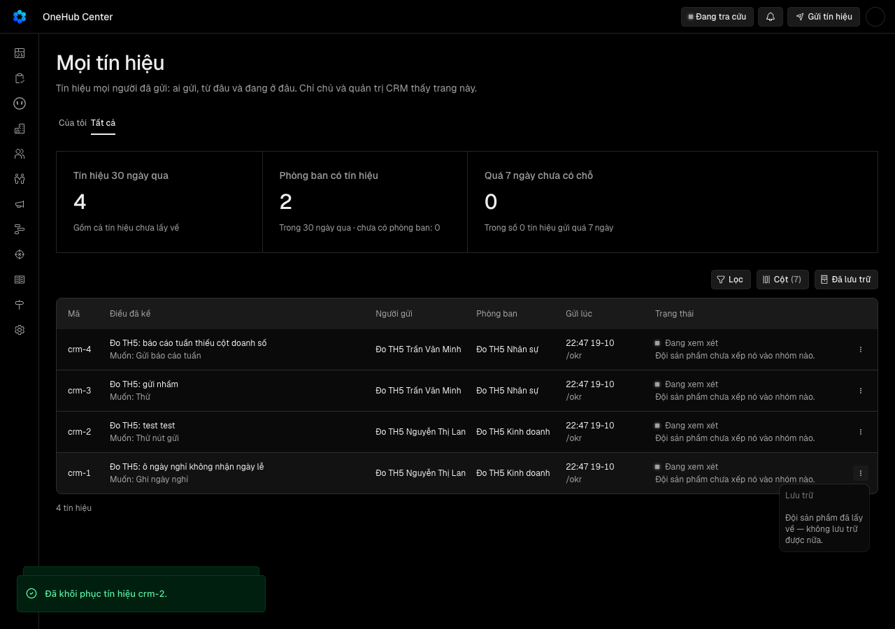

Quản trị lưu trữ một tín hiệu rác trước khi đội sản phẩm lấy về, và hoàn tác được nếu lỡ tay
Vì sao làm
Tín hiệu rác (thử, trùng, nhầm) vào thẳng lượt gom và làm nhiễu con số ngưỡng sống; hợp đồng LT2 đã để phần này ngoài phạm vi.
Đã hứa
- AC-1 — (cross-layer) Given một tín hiệu chưa lấy về, When một chủ hay quản trị lưu trữ nó (tRPC `tinHieu.luuTru` hay REST `POST /tin-hieu/{id}/luu-tru`), Then máy chủ ghi lúc lưu trữ và người lưu trữ lên tín hiệu, thêm đúng một dòng vết «lưu trữ» mang người đó, danh sách «Tất cả» mặc định không còn tín hiệu ấy, và danh sách «Đã lưu trữ» có nó kèm lúc lưu trữ và tên người lưu trữ; Given tín hiệu đó đang lưu trữ, When lưu trữ lại, Then lúc lưu trữ giữ nguyên lần đầu và không thêm vết nào.
- AC-2 — (cross-layer) Given trên máy chủ có tín hiệu đang lưu trữ, tín hiệu đang dùng chưa lấy về, và một tín hiệu đã lưu trữ rồi khôi phục, When lượt kéo về chạy (bằng tay `POST /tin-hieu/keo-ve` hay theo lịch `POST /tin-hieu/lich/keo-ve`), Then phản hồi không mang tín hiệu đang lưu trữ, tín hiệu ấy không bị đóng dấu đã lấy về, tín hiệu đã khôi phục được lấy về như mọi tín hiệu khác, lệnh `bun run tin-hieu:keo-ve` không ghi tệp nào cho tín hiệu đang lưu trữ, và dòng tổng kết của lệnh không đếm nó.
- AC-3 — (cross-layer) Given một tín hiệu đội sản phẩm đã lấy về, When chủ hay quản trị lưu trữ nó, Then máy chủ từ chối (409) với câu «Đội sản phẩm đã lấy tín hiệu này về — không lưu trữ được nữa.» và không đổi gì; Given lệnh lưu trữ và một lượt kéo về chạy cùng lúc trên cùng tín hiệu, Then đúng một trong hai kết cục xảy ra — tín hiệu đang lưu trữ và không có trong phản hồi kéo về, hoặc tín hiệu đã lấy về và lệnh lưu trữ bị từ chối.
- AC-4 — (cross-layer) Given người vai thành viên hay vai chỉ OKR (kể cả khi chính họ gửi tín hiệu đó), When họ gọi lưu trữ, khôi phục, hay xem danh sách «Đã lưu trữ» qua tRPC hay REST bằng khoá của chính họ, Then máy chủ từ chối (403), không đổi tín hiệu nào và không trả dòng nào.
- AC-5 — (cross-layer) Given quản trị vừa lưu trữ tín hiệu crm-N ở thẻ «Tất cả», When họ bấm «Hoàn tác» trên thông báo «Đã lưu trữ tín hiệu crm-N.» trong 10 giây, hoặc về sau bấm «Khôi phục» ở dạng «Đã lưu trữ», Then tín hiệu trở lại bảng đang dùng với trạng thái cũ, lúc lưu trữ và người lưu trữ được xoá, máy chủ thêm đúng một dòng vết «khôi phục» mang người bấm, và lượt kéo về kế tiếp lấy nó về; khôi phục một tín hiệu đang dùng không đổi gì và không thêm vết.
- AC-6 — Given thẻ «Tất cả» của chủ hay quản trị, When họ nhìn thanh công cụ và một dòng, Then thanh công cụ có nút «Đã lưu trữ» bật tắt được, trạng thái của nó nằm trên đường dẫn và tải lại trang giữ nguyên, bật tắt đưa về trang đầu và giữ bộ lọc; mỗi dòng có nút thao tác mở menu: dòng chưa lấy về có «Lưu trữ», dòng đã lấy về có «Lưu trữ» bị khoá kèm dòng «Đội sản phẩm đã lấy về — không lưu trữ được nữa.»; dạng «Đã lưu trữ» có thêm cột «Lưu trữ lúc» (giờ Việt Nam) và «Người lưu trữ», menu dòng có «Khôi phục», và khi rỗng nói «Chưa lưu trữ tín hiệu nào».
- AC-7 — (cross-layer) Given có tín hiệu đang lưu trữ, When quản trị mở thẻ «Tất cả» hay chạy lệnh kéo về, Then ba ô số đầu thẻ và số đếm từng giá trị lọc của dạng đang dùng không đếm tín hiệu đang lưu trữ, ba ô số không đổi khi bật «Đã lưu trữ», và ba con số trên thẻ vẫn bằng đúng ba con số dòng tổng kết của lệnh kéo về in ra cho cùng bộ tín hiệu; When quản trị vừa lưu trữ, Hoàn tác hay Khôi phục mà không tải lại trang, Then ba ô số đổi theo ngay, bằng số đếm của danh sách «Tất cả» mặc định lúc đó.
- AC-8 — Given người gửi có một tín hiệu đã bị lưu trữ, When họ mở «Tín hiệu đã gửi», Then tín hiệu vẫn ở danh sách với nhãn «Đã lưu trữ» màu xám và câu «Quản trị đã lưu trữ tín hiệu này — đội sản phẩm sẽ không xem xét nó.», nút xoá của họ vẫn còn, và trang không lộ tên người lưu trữ.
- AC-9 — Given thẻ «Tất cả», When lệnh lưu trữ hay khôi phục đang chờ, hỏng vì mạng, hỏng vì tín hiệu vừa bị lấy về, hay màn hình rộng 375 px, Then mục menu đang chờ bị khoá và không gửi chồng lần hai; hỏng thì thông báo lỗi nói đúng lý do («vừa lấy về» khác «chưa lưu trữ được — thử lại sau») và dòng ở lại bảng; vừa bị lấy về thì bảng làm mới và dòng hiện trạng thái đã lấy về; ở 375 px nút thao tác nằm trong khung và trang không cuộn ngang.
- AC-10 — Given cơ sở dữ liệu production đang có tín hiệu, When migration của vòng này chạy, Then nó chỉ thêm (hai cột cho phép rỗng, một bảng vết, chỉ mục, khoá ngoại), không sửa hay xoá dòng nào, mọi tín hiệu có sẵn ở trạng thái đang dùng, tên migration xếp sau mọi migration nó trỏ tới, và schema sau migration khớp `schema.prisma` không trôi.
Thiết kế
docs/superpowers/specs/2026-10-19-go-tin-hieu-rac-design.md
Quyết định
- 2026-10-19 · Máy · descope · S1 — Quản trị chỉ có Lưu trữ → Khôi phục, có Hoàn tác; không có Xoá vĩnh viễn và tín hiệu đã lưu trữ không vào lịch dọn tự động.Ghi chú hàng TH5 chốt «không xoá hẳn» (docs/plan/lo-trinh-okr.json); AC-1, AC-5.
- 2026-10-19 · Máy · approach · S1 — Chỉ lưu trữ được tín hiệu đội sản phẩm chưa lấy về; tín hiệu đã lấy về bị máy chủ từ chối, và menu khoá mục Lưu trữ kèm lý do.Câu giao nói «trước khi đội sản phẩm lấy về»; tệp đã kéo về nằm trong kho sản phẩm nên gỡ ở CRM không gỡ được nó; AC-3, AC-6.
- 2026-10-19 · Máy · approach · S1 — Mỗi lần lưu trữ hay khôi phục đổi trạng thái thêm một dòng vào bảng vết riêng mang người làm và mã tín hiệu; vết ở lại cả khi người gửi xoá tín hiệu.Ngưỡng Cổng Đáng đòi «mỗi lần gỡ có vết người gỡ»; E1, E5 đếm dòng vết.
- 2026-10-19 · Máy · approach · S1 — Ba ô số của thẻ Tất cả, số đếm bộ lọc và dòng tổng kết của lệnh kéo về chỉ đếm tín hiệu đang dùng.docs/vong-doi.md cấm bắt người dùng tính thứ đã cất; ngưỡng sống đếm tín hiệu thật, không đếm rác; AC-7, E7.
- 2026-10-19 · Máy · approach · S1 — Tín hiệu đã lưu trữ tìm lại ở nút «Đã lưu trữ» trên thanh công cụ của thẻ Tất cả, ghi lên đường dẫn như bảng Công ty.Thẻ Tất cả là bảng có lọc và phân trang — đúng hàng «Bảng lớn» của docs/vong-doi.md; AC-6, E6.
- 2026-10-19 · Máy · approach · S1 — Bấm Lưu trữ không hỏi lại và không đòi lý do; thông báo có Hoàn tác 10 giây.Luật lưu trữ của docs/vong-doi.md; lý do lưu trữ chưa ai đọc nên để Later; AC-5, E5b.
- 2026-10-19 · Máy · approach · S1 — Hỏi-1: người gửi vẫn thấy tín hiệu bị lưu trữ ở «Tín hiệu đã gửi», nhãn xám «Đã lưu trữ» kèm câu «Quản trị đã lưu trữ tín hiệu này — đội sản phẩm sẽ không lấy về.», không lộ tên người lưu trữ, và vẫn xoá được.Đây là nghĩa sản phẩm người gửi thấy — docs/vong-doi.md chỉ nói danh sách của người cất, không nói danh sách của người gửi; AC-8, E8.
- 2026-10-19 · Máy · approach · S1 — Lệnh kéo về và con số ngưỡng sống chỉ đếm tín hiệu đang dùng — tín hiệu rác đã lưu trữ không vào lượt gom; ba ô số và số đếm bộ lọc trên thẻ theo luật vòng đời, và đổi ngay sau mỗi thao tác.Ô cơ hội đã ký nói rác làm nhiễu con số ngưỡng sống — đó là căn cứ đổi cách đếm của lệnh; luật vòng đời chỉ quyết số đếm trên màn; gap-probe P2; AC-7, E7, E7b, E5c.
- 2026-10-19 · Máy · approach · S1 — Chạy design-pass: bản mẫu /proto/go-tin-hieu-rac ghép từ mảnh thật, 9 trạng thái × 1280/375 × sáng/tối, gửi ảnh kèm lời mời Cổng Phạm vi (nấc không đồng bộ trên ảnh).Vòng chạm màn «Mọi tín hiệu» và «Tín hiệu đã gửi»; Cổng Phạm vi duyệt giao diện trên bản bấm được — design-pass.md, evidence/design-pass/.
- 2026-10-19 · Người · seal · gate1 —
- 2026-10-19 · Máy · fix · S3 — Danh sách «Đã lưu trữ» là một thủ tục riêng (tinHieu.daLuuTru, REST GET /tin-hieu/da-luu-tru) thay cho tham số archived trên tinHieu.tatCa.Cầu REST đọc tham số GET thành chuỗi, «false» ép kiểu thành đúng; giữ tatCa không đầu vào thì REST cũ của TH4 không đổi; E1, E4 đổi tên thủ tục, lời AC không đổi.
- 2026-10-19 · Máy · fix · S3 — Chiều đỏ của ca lưu trữ trùng lúc kéo về (E3) đổi thành bản gỡ cả hai lớp bảo vệ; khẳng định 409 mang thông điệp ghim.Phá thử 19/10: bỏ riêng lệnh khoá bảng vẫn xanh vì câu cập nhật có điều kiện tự giữ khoá, và bỏ riêng điều kiện vẫn xanh vì khoá bảng — hai lớp độc lập; lời AC-3 không đổi.
- 2026-10-19 · Máy · fix · S3 — Câu cho người gửi ở AC-8 đổi thành «Quản trị đã lưu trữ tín hiệu này — đội sản phẩm sẽ không xem xét nó.» (bản Anh «won't review it»); nghĩa Hỏi-1 lựa chọn A giữ nguyên.Bài kiểm chữ của TH6 (sgt-chu) cấm từ nội bộ «lấy về» trong chữ người gửi đọc — câu duyệt ở Cổng Phạm vi trái luật đó; «xem xét» là chữ TH6 đã dùng cho người gửi.
- 2026-10-19 · Máy · fix · S3 — E12 đổi từ lưới thiết kế tĩnh sang phép đo riêng của hồ sơ: không thành phần dùng chung nào trong năm tệp giao diện của vòng bị ghi đè màu, góc, viền, khoảng cách.Phá thử 19/10: design-gate --mode static in «không đo được tệp này (.tsx)» và thoát 0, lint:slop cũng không bắt className đổi màu — E12 cũ xanh mà không đo; phép đo mới có chiều đỏ tự chạy mỗi lượt.
- 2026-10-19 · Máy · fix · S3 — Bước 6 của kế hoạch chỉ chạy kiểm kiểu và hai lưới lint toàn kho; bộ kiểm cả kho và bản dựng để lượt chấm S4 chạy.Danh sách lệnh của S4 (feature_loop.suite_keys) đã gồm bộ kiểm bốn gói, lint và bản dựng; chạy trước một lần nữa là gấp đôi giờ máy (hệ số giờ máy của đợt, luật 25).
- 2026-10-19 · Máy · fix · S4-r1 — Bài «không lộ người lưu trữ» (E8) nay dựng trang người gửi thật với dữ liệu cố ý mang tên người lưu trữ, kèm đối chứng dương cùng trang; bài API (E8a) thêm đối chứng dương trên danh sách Đã lưu trữ; cả hai ghim thông điệp.Phát hiện trong hợp đồng của S4 vòng 1 (AC-8): bài cũ khẳng định phủ định trên dữ liệu không chứa tên nên xanh vô điều kiện; phá thử 19/10 cho bài mới đỏ đúng «trang nguoi gui lo nguoi luu tru».
- 2026-10-19 · Máy · fix · S4-r2 — Không sửa mã sau vòng 2: hai bộ kiểm cả kho đỏ vì hết giờ chờ ở ca không liên quan (hook beforeEach 120 giây ở gói API, «dung-lan-hai» 5 giây ở gói auth); chấm lại vòng 3 với mọi eval mang sang.Vòng 1 hai bộ này xanh, giữa hai vòng chỉ đổi hai tệp bài kiểm của TH5; chạy lại riêng gói auth trên máy xanh 173/173; tải máy lúc vòng 2 cao (load 6,8) — luật 15 của đợt.
Bằng chứng
Các eval
| Eval | Tiêu chí | Loại | Verdict | run_id | verified_at |
|---|---|---|---|---|---|
| E1 | AC-1 | test | PASS (CARRY-FORWARD TỪ VÒNG 2) | minted-go-tin-hieu-rac-E1-r2 | 2026-10-19T16:12:31Z |
| E2 | AC-2 | test | PASS (CARRY-FORWARD TỪ VÒNG 2) | minted-go-tin-hieu-rac-E2-r2 | 2026-10-19T16:12:31Z |
| E3 | AC-3 | test | PASS (CARRY-FORWARD TỪ VÒNG 2) | minted-go-tin-hieu-rac-E3-r2 | 2026-10-19T16:12:31Z |
| E4 | AC-4 | test | PASS (CARRY-FORWARD TỪ VÒNG 2) | minted-go-tin-hieu-rac-E4-r2 | 2026-10-19T16:12:31Z |
| E4b | AC-4 | test | PASS (CARRY-FORWARD TỪ VÒNG 2) | minted-go-tin-hieu-rac-E4b-r2 | 2026-10-19T16:12:31Z |
| E5 | AC-5 | test | PASS (CARRY-FORWARD TỪ VÒNG 2) | minted-go-tin-hieu-rac-E5-r2 | 2026-10-19T16:12:31Z |
| E5b | AC-5 | test | PASS (CARRY-FORWARD TỪ VÒNG 2) | minted-go-tin-hieu-rac-E5b-r2 | 2026-10-19T16:12:31Z |
| E5c | AC-5 | ui-check | PASS (CARRY-FORWARD TỪ VÒNG 2) | minted-go-tin-hieu-rac-E5c-r2 | 2026-10-19T16:12:31Z |
| E6 | AC-6 | test | PASS (CARRY-FORWARD TỪ VÒNG 2) | minted-go-tin-hieu-rac-E6-r2 | 2026-10-19T16:12:31Z |
| E6b | AC-6 | ui-check | PASS (CARRY-FORWARD TỪ VÒNG 1) | minted-go-tin-hieu-rac-E6b-r1 | 2026-10-19T15:45:20Z |
| E7 | AC-7 | test | PASS (CARRY-FORWARD TỪ VÒNG 2) | minted-go-tin-hieu-rac-E7-r2 | 2026-10-19T16:12:31Z |
| E7b | AC-7 | test | PASS (CARRY-FORWARD TỪ VÒNG 2) | minted-go-tin-hieu-rac-E7b-r2 | 2026-10-19T16:12:31Z |
| E8 | AC-8 | test | PASS (CARRY-FORWARD TỪ VÒNG 2) | minted-go-tin-hieu-rac-E8-r2 | 2026-10-19T16:12:31Z |
| E8a | AC-8 | test | PASS (CARRY-FORWARD TỪ VÒNG 2) | minted-go-tin-hieu-rac-E8a-r2 | 2026-10-19T16:12:31Z |
| E8b | AC-8 | ui-check | PASS (CARRY-FORWARD TỪ VÒNG 1) | minted-go-tin-hieu-rac-E8b-r1 | 2026-10-19T15:45:20Z |
| E9 | AC-9 | test | PASS (CARRY-FORWARD TỪ VÒNG 2) | minted-go-tin-hieu-rac-E9-r2 | 2026-10-19T16:12:31Z |
| E9b | AC-9 | ui-check | PASS (CARRY-FORWARD TỪ VÒNG 1) | minted-go-tin-hieu-rac-E9b-r1 | 2026-10-19T15:45:20Z |
| E10 | AC-10 | script | PASS (CARRY-FORWARD TỪ VÒNG 1) | minted-go-tin-hieu-rac-E10-r1 | 2026-10-19T15:45:20Z |
| E11 | AC-6 | judgment | PASS (HỘI ĐỒNG ĐỀ XUẤT, CHỜ NGƯỜI) | — | — |
| E12 | AC-9 | script | PASS (CARRY-FORWARD TỪ VÒNG 1) | minted-go-tin-hieu-rac-E12-r1 | 2026-10-19T15:45:20Z |
Chi tiết từng eval
PASS (CARRY-FORWARD TỪ VÒNG 2) E1 · test
AC-1: (cross-layer) Given một tín hiệu chưa lấy về, When một chủ hay quản trị lưu trữ nó (tRPC `tinHieu.luuTru` hay REST `POST /tin-hieu/{id}/luu-tru`), Then máy chủ ghi lúc lưu trữ và người lưu trữ lên tín hiệu, thêm đúng một dòng vết «lưu trữ» mang người đó, danh sách «Tất cả» mặc định không còn tín hiệu ấy, và danh sách «Đã lưu trữ» có nó kèm lúc lưu trữ và tên người lưu trữ; Given tín hiệu đó đang lưu trữ, When lưu trữ lại, Then lúc lưu trữ giữ nguyên lần đầu và không thêm vết nào.
PASS (CARRY-FORWARD TỪ VÒNG 2) E2 · test
AC-2: (cross-layer) Given trên máy chủ có tín hiệu đang lưu trữ, tín hiệu đang dùng chưa lấy về, và một tín hiệu đã lưu trữ rồi khôi phục, When lượt kéo về chạy (bằng tay `POST /tin-hieu/keo-ve` hay theo lịch `POST /tin-hieu/lich/keo-ve`), Then phản hồi không mang tín hiệu đang lưu trữ, tín hiệu ấy không bị đóng dấu đã lấy về, tín hiệu đã khôi phục được lấy về như mọi tín hiệu khác, lệnh `bun run tin-hieu:keo-ve` không ghi tệp nào cho tín hiệu đang lưu trữ, và dòng tổng kết của lệnh không đếm nó.
PASS (CARRY-FORWARD TỪ VÒNG 2) E3 · test
AC-3: (cross-layer) Given một tín hiệu đội sản phẩm đã lấy về, When chủ hay quản trị lưu trữ nó, Then máy chủ từ chối (409) với câu «Đội sản phẩm đã lấy tín hiệu này về — không lưu trữ được nữa.» và không đổi gì; Given lệnh lưu trữ và một lượt kéo về chạy cùng lúc trên cùng tín hiệu, Then đúng một trong hai kết cục xảy ra — tín hiệu đang lưu trữ và không có trong phản hồi kéo về, hoặc tín hiệu đã lấy về và lệnh lưu trữ bị từ chối.
PASS (CARRY-FORWARD TỪ VÒNG 2) E4 · test
AC-4: (cross-layer) Given người vai thành viên hay vai chỉ OKR (kể cả khi chính họ gửi tín hiệu đó), When họ gọi lưu trữ, khôi phục, hay xem danh sách «Đã lưu trữ» qua tRPC hay REST bằng khoá của chính họ, Then máy chủ từ chối (403), không đổi tín hiệu nào và không trả dòng nào.
PASS (CARRY-FORWARD TỪ VÒNG 2) E4b · test
AC-4: (cross-layer) Given người vai thành viên hay vai chỉ OKR (kể cả khi chính họ gửi tín hiệu đó), When họ gọi lưu trữ, khôi phục, hay xem danh sách «Đã lưu trữ» qua tRPC hay REST bằng khoá của chính họ, Then máy chủ từ chối (403), không đổi tín hiệu nào và không trả dòng nào.
PASS (CARRY-FORWARD TỪ VÒNG 2) E5 · test
AC-5: (cross-layer) Given quản trị vừa lưu trữ tín hiệu crm-N ở thẻ «Tất cả», When họ bấm «Hoàn tác» trên thông báo «Đã lưu trữ tín hiệu crm-N.» trong 10 giây, hoặc về sau bấm «Khôi phục» ở dạng «Đã lưu trữ», Then tín hiệu trở lại bảng đang dùng với trạng thái cũ, lúc lưu trữ và người lưu trữ được xoá, máy chủ thêm đúng một dòng vết «khôi phục» mang người bấm, và lượt kéo về kế tiếp lấy nó về; khôi phục một tín hiệu đang dùng không đổi gì và không thêm vết.
PASS (CARRY-FORWARD TỪ VÒNG 2) E5b · test
AC-5: (cross-layer) Given quản trị vừa lưu trữ tín hiệu crm-N ở thẻ «Tất cả», When họ bấm «Hoàn tác» trên thông báo «Đã lưu trữ tín hiệu crm-N.» trong 10 giây, hoặc về sau bấm «Khôi phục» ở dạng «Đã lưu trữ», Then tín hiệu trở lại bảng đang dùng với trạng thái cũ, lúc lưu trữ và người lưu trữ được xoá, máy chủ thêm đúng một dòng vết «khôi phục» mang người bấm, và lượt kéo về kế tiếp lấy nó về; khôi phục một tín hiệu đang dùng không đổi gì và không thêm vết.
PASS (CARRY-FORWARD TỪ VÒNG 2) E5c · ui-check
AC-5: (cross-layer) Given quản trị vừa lưu trữ tín hiệu crm-N ở thẻ «Tất cả», When họ bấm «Hoàn tác» trên thông báo «Đã lưu trữ tín hiệu crm-N.» trong 10 giây, hoặc về sau bấm «Khôi phục» ở dạng «Đã lưu trữ», Then tín hiệu trở lại bảng đang dùng với trạng thái cũ, lúc lưu trữ và người lưu trữ được xoá, máy chủ thêm đúng một dòng vết «khôi phục» mang người bấm, và lượt kéo về kế tiếp lấy nó về; khôi phục một tín hiệu đang dùng không đổi gì và không thêm vết.
PASS (CARRY-FORWARD TỪ VÒNG 2) E6 · test
AC-6: Given thẻ «Tất cả» của chủ hay quản trị, When họ nhìn thanh công cụ và một dòng, Then thanh công cụ có nút «Đã lưu trữ» bật tắt được, trạng thái của nó nằm trên đường dẫn và tải lại trang giữ nguyên, bật tắt đưa về trang đầu và giữ bộ lọc; mỗi dòng có nút thao tác mở menu: dòng chưa lấy về có «Lưu trữ», dòng đã lấy về có «Lưu trữ» bị khoá kèm dòng «Đội sản phẩm đã lấy về — không lưu trữ được nữa.»; dạng «Đã lưu trữ» có thêm cột «Lưu trữ lúc» (giờ Việt Nam) và «Người lưu trữ», menu dòng có «Khôi phục», và khi rỗng nói «Chưa lưu trữ tín hiệu nào».
PASS (CARRY-FORWARD TỪ VÒNG 1) E6b · ui-check
AC-6: Given thẻ «Tất cả» của chủ hay quản trị, When họ nhìn thanh công cụ và một dòng, Then thanh công cụ có nút «Đã lưu trữ» bật tắt được, trạng thái của nó nằm trên đường dẫn và tải lại trang giữ nguyên, bật tắt đưa về trang đầu và giữ bộ lọc; mỗi dòng có nút thao tác mở menu: dòng chưa lấy về có «Lưu trữ», dòng đã lấy về có «Lưu trữ» bị khoá kèm dòng «Đội sản phẩm đã lấy về — không lưu trữ được nữa.»; dạng «Đã lưu trữ» có thêm cột «Lưu trữ lúc» (giờ Việt Nam) và «Người lưu trữ», menu dòng có «Khôi phục», và khi rỗng nói «Chưa lưu trữ tín hiệu nào».



PASS (CARRY-FORWARD TỪ VÒNG 2) E7 · test
AC-7: (cross-layer) Given có tín hiệu đang lưu trữ, When quản trị mở thẻ «Tất cả» hay chạy lệnh kéo về, Then ba ô số đầu thẻ và số đếm từng giá trị lọc của dạng đang dùng không đếm tín hiệu đang lưu trữ, ba ô số không đổi khi bật «Đã lưu trữ», và ba con số trên thẻ vẫn bằng đúng ba con số dòng tổng kết của lệnh kéo về in ra cho cùng bộ tín hiệu; When quản trị vừa lưu trữ, Hoàn tác hay Khôi phục mà không tải lại trang, Then ba ô số đổi theo ngay, bằng số đếm của danh sách «Tất cả» mặc định lúc đó.
PASS (CARRY-FORWARD TỪ VÒNG 2) E7b · test
AC-7: (cross-layer) Given có tín hiệu đang lưu trữ, When quản trị mở thẻ «Tất cả» hay chạy lệnh kéo về, Then ba ô số đầu thẻ và số đếm từng giá trị lọc của dạng đang dùng không đếm tín hiệu đang lưu trữ, ba ô số không đổi khi bật «Đã lưu trữ», và ba con số trên thẻ vẫn bằng đúng ba con số dòng tổng kết của lệnh kéo về in ra cho cùng bộ tín hiệu; When quản trị vừa lưu trữ, Hoàn tác hay Khôi phục mà không tải lại trang, Then ba ô số đổi theo ngay, bằng số đếm của danh sách «Tất cả» mặc định lúc đó.
PASS (CARRY-FORWARD TỪ VÒNG 2) E8 · test
AC-8: Given người gửi có một tín hiệu đã bị lưu trữ, When họ mở «Tín hiệu đã gửi», Then tín hiệu vẫn ở danh sách với nhãn «Đã lưu trữ» màu xám và câu «Quản trị đã lưu trữ tín hiệu này — đội sản phẩm sẽ không xem xét nó.», nút xoá của họ vẫn còn, và trang không lộ tên người lưu trữ.
PASS (CARRY-FORWARD TỪ VÒNG 2) E8a · test
AC-8: Given người gửi có một tín hiệu đã bị lưu trữ, When họ mở «Tín hiệu đã gửi», Then tín hiệu vẫn ở danh sách với nhãn «Đã lưu trữ» màu xám và câu «Quản trị đã lưu trữ tín hiệu này — đội sản phẩm sẽ không xem xét nó.», nút xoá của họ vẫn còn, và trang không lộ tên người lưu trữ.
PASS (CARRY-FORWARD TỪ VÒNG 1) E8b · ui-check
AC-8: Given người gửi có một tín hiệu đã bị lưu trữ, When họ mở «Tín hiệu đã gửi», Then tín hiệu vẫn ở danh sách với nhãn «Đã lưu trữ» màu xám và câu «Quản trị đã lưu trữ tín hiệu này — đội sản phẩm sẽ không xem xét nó.», nút xoá của họ vẫn còn, và trang không lộ tên người lưu trữ.
PASS (CARRY-FORWARD TỪ VÒNG 2) E9 · test
AC-9: Given thẻ «Tất cả», When lệnh lưu trữ hay khôi phục đang chờ, hỏng vì mạng, hỏng vì tín hiệu vừa bị lấy về, hay màn hình rộng 375 px, Then mục menu đang chờ bị khoá và không gửi chồng lần hai; hỏng thì thông báo lỗi nói đúng lý do («vừa lấy về» khác «chưa lưu trữ được — thử lại sau») và dòng ở lại bảng; vừa bị lấy về thì bảng làm mới và dòng hiện trạng thái đã lấy về; ở 375 px nút thao tác nằm trong khung và trang không cuộn ngang.
PASS (CARRY-FORWARD TỪ VÒNG 1) E9b · ui-check
AC-9: Given thẻ «Tất cả», When lệnh lưu trữ hay khôi phục đang chờ, hỏng vì mạng, hỏng vì tín hiệu vừa bị lấy về, hay màn hình rộng 375 px, Then mục menu đang chờ bị khoá và không gửi chồng lần hai; hỏng thì thông báo lỗi nói đúng lý do («vừa lấy về» khác «chưa lưu trữ được — thử lại sau») và dòng ở lại bảng; vừa bị lấy về thì bảng làm mới và dòng hiện trạng thái đã lấy về; ở 375 px nút thao tác nằm trong khung và trang không cuộn ngang.
PASS (CARRY-FORWARD TỪ VÒNG 1) E10 · script
AC-10: Given cơ sở dữ liệu production đang có tín hiệu, When migration của vòng này chạy, Then nó chỉ thêm (hai cột cho phép rỗng, một bảng vết, chỉ mục, khoá ngoại), không sửa hay xoá dòng nào, mọi tín hiệu có sẵn ở trạng thái đang dùng, tên migration xếp sau mọi migration nó trỏ tới, và schema sau migration khớp `schema.prisma` không trôi.
PASS (HỘI ĐỒNG ĐỀ XUẤT, CHỜ NGƯỜI) E11 · judgment
AC-6: Given thẻ «Tất cả» của chủ hay quản trị, When họ nhìn thanh công cụ và một dòng, Then thanh công cụ có nút «Đã lưu trữ» bật tắt được, trạng thái của nó nằm trên đường dẫn và tải lại trang giữ nguyên, bật tắt đưa về trang đầu và giữ bộ lọc; mỗi dòng có nút thao tác mở menu: dòng chưa lấy về có «Lưu trữ», dòng đã lấy về có «Lưu trữ» bị khoá kèm dòng «Đội sản phẩm đã lấy về — không lưu trữ được nữa.»; dạng «Đã lưu trữ» có thêm cột «Lưu trữ lúc» (giờ Việt Nam) và «Người lưu trữ», menu dòng có «Khôi phục», và khi rỗng nói «Chưa lưu trữ tín hiệu nào».
PASS (CARRY-FORWARD TỪ VÒNG 1) E12 · script
AC-9: Given thẻ «Tất cả», When lệnh lưu trữ hay khôi phục đang chờ, hỏng vì mạng, hỏng vì tín hiệu vừa bị lấy về, hay màn hình rộng 375 px, Then mục menu đang chờ bị khoá và không gửi chồng lần hai; hỏng thì thông báo lỗi nói đúng lý do («vừa lấy về» khác «chưa lưu trữ được — thử lại sau») và dòng ở lại bảng; vừa bị lấy về thì bảng làm mới và dòng hiện trạng thái đã lấy về; ở 375 px nút thao tác nằm trong khung và trang không cuộn ngang.
Eval không phân biệt (Analyst)
Vòng verify
- Round 1: 26 kết quả trả về, verdict PENDING-JUDGMENT (E11 chờ người, tám phát hiện ngoài hợp đồng và một phát hiện trong hợp đồng ở AC-8 đã sửa).
- Round 2: mọi eval của tính năng xanh (E5c đo lại, E6b/E8b/E9b/E10/E12 carry-forward từ round 1), nhưng hai lệnh suite không gắn eval chạy đỏ: gói api và gói gộp agent/@crm/auth/@crm/db. Verdict REJECT. Trả về triển khai: chạy lại hai lệnh đó trên máy nhàn rỗi và đọc ca đỏ trước khi tin.
- Round 3: mọi eval của tính năng giữ xanh (carry-forward từ round 1 và 2, delta không chạm paths của chúng). Hai lệnh suite đỏ ở vòng 2 nay xanh, nhưng lệnh gói app và @crm/ui đỏ ở ca «dh4-mo-the» của `okr-so-do-don-vi.dom.tsx`, không gắn eval nào. Verdict REJECT. Trả về triển khai: đọc ca đỏ, xác định nó chập chờn hay do gộp onehub, chạy lại lệnh trên máy nhàn rỗi trước khi tin.
Tài nguyên
| Khối | Tác tử | Token đầu ra |
|---|---|---|
| S4 round 1 | 38 | 68.349 |
| S4 round 2 | 29 | 37.521 |
| S4 round 3 | 15 | 39.604 |
3 lượt chấm · tổng 145.474 token
Giới hạn và ngoài hợp đồng
- Xoá vĩnh viễn tín hiệu của người khác; đưa tín hiệu đã lưu trữ vào lịch dọn tự động — hàng TH5 ghi «không xoá hẳn».
- Lưu trữ tín hiệu đã lấy về — tệp đã ở kho sản phẩm, gỡ ở CRM không gỡ được tệp.
- Lưu trữ hàng loạt và lý do lưu trữ — Later trong bản quét.
- Báo người gửi khi tín hiệu bị lưu trữ — dãy thông báo (TB2).
- Đổi trần 10 tín hiệu mỗi ngày — trần vẫn đếm tín hiệu đã bị lưu trữ.
- Xem toàn bộ lịch sử vết trên màn — vết chỉ đọc qua máy chủ trong vòng này.
Giao
chưa gộp vào onehub (nhánh production kho khai)
Giá trị
- Câu hỏi phép đo trả lời: [đề xuất] đã đạt «Lượt kéo về đầu tiên sau khi giao không mang tín hiệu nào đã lưu trữ; mỗi lần gỡ có vết người gỡ (ngưỡng đề xuất — chốt ở Cổng Đáng)» chưa? — chưa đo
- Kết quả nào là SỐNG: [đề xuất] Lượt kéo về đầu tiên sau khi giao không mang tín hiệu nào đã lưu trữ; mỗi lần gỡ có vết người gỡ (ngưỡng đề xuất — chốt ở Cổng Đáng) — chưa đo
- Kết quả nào là CHẾT: [đề xuất] chưa đạt «Lượt kéo về đầu tiên sau khi giao không mang tín hiệu nào đã lưu trữ; mỗi lần gỡ có vết người gỡ (ngưỡng đề xuất — chốt ở Cổng Đáng)» khi hết timebox — chưa đo
- Timebox: [đề xuất] 2026-10-29 (mốc Tín hiệu và trang Lộ trình theo kit 2.33) — chưa đo